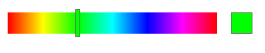

4. HSB Color-Slider Example¶
4.1. Overview¶
The project below creates an interactive HSB color selector as an example project to demonstrate the iterative design process for designing functions. In order to create this UI-widget, first we need to figure out the required components. First, let’s plan to create a simple rectangle that is filled with the full HSB hue-range. Then we’ll need to figure out how to let the user interact with it to select a color. Then we’ll want provide a way to use that selected color in another part of the program.
- Input values: position and size of the slider widget.
- Output values: a hueValue that has been selected.
- Display: some representation of a range of hues, and indication of currently selected hue value.
- Interactivity: a means for the user to modify and select a hue value.
The image below shows the widget we’ll design.

4.2. HSB ColorMode¶
HSB Color works well for a color picker because it allows for a full color spectrum to be represented by making incremental changes to a single color variable. In Processing, we can use the
ColorMode(HSB)function so that thefill()andstroke()functions can use the HSB color values instead of the default RGB color values. Whereas when using thefill(float redVal,float greenVal,float blueVal ), the input values specify red, green, and blue color components. With HSB, the 3 input parameters forfill(float hueVal,float saturationVal, float brightnessVal)specify hue, saturation and brightness values.For the HSB slider, we’ll keep the saturation and brightness fixed at the maximum values of 255, so the only value that changes for this widget is the hue value, which will range from 0-255. The image below shows that the top surface of the HSB color-space cone represents values where the Brightness value is maximum. The top surface of the cone represents a color wheel with saturation varying from 0 at the middle of the cone to a maximum saturation at the outer perimeter of the wheel. At the outer perimeter, the saturation and brightness are at the maximum values, the hue varies in values from 0 to 360 degrees. So, the minimum value of hue = the maximum value of hue = Red.
Our color slider (above) also shows that red occurs at the both the maximum and minimum values. Although the circular values for hue range from 0 to 360 degrees, we will use the Processing convention of having color values that range from 0 - 255, which corresponds to 8 bits of color information for each color input parameter. We will have to insure that our slider shows the full range of hue values, so we’ll need to transform the 0-255 values to fit within the width of our rectangular slider
sWidthdimensions.
Image from: TomJewett.com¶
4.3. Function Declaration¶
Because this will be an interactive widget, then we’ll need to use the processing draw() loop. We’ll also start with the setup() function so we can set the canvas size. We also know that we’re going to create a function that displays an HSB Slider so we can create the declaration that function using the information we identified above:
void setup(){
size(300,100);
}
void draw(){
float hueValue = drawSlider(20,20,200,50); //draw the slider at x=20,y=20, 200px wide, 50 px tall
}
//function to create interactive HSB slider, returns the selected hueValue
float drawSlider(int xPos, int yPos, int sWidth, int sHeight){
}
4.4. Function Design - Step 1¶
So, now we need to think about what code we will write inside of the function. The things we need to do in the function are:
- Draw an HSB hue gradient inside a rectangle to show available colors for selection.
- Draw another small rectangle to show the selected color.
- Draw an indicator rectangle that slides along the slider to modify the color.
- Write code to allow changing values when the user drag the slider indicator.
4.5. Hue Spectrum Rectangle¶
The first thing to do is to draw a basic rectangle using our function’s input values. Then we need to figure out how to create a RoyGBiv rainbow spectrum inside the rectangle that corresponds to the full range of hue values from 0-255. One idea is that we could fill the rectangle with points of color, where we vary the hue value of each point along the x and y values of the rectangle. However, for our needs, we can actually use lines since we don’t need to vary the color along the y-axis, all points in the rectangle that have the same y value will have the same hue value. So, to color lines, we need to use the stroke() function in Processing. We’ll want to use a loop, and for each value of x in the rectangle, we’ll want to vary the hue value. We can do that with a for loop, where each value of i corresponds to a 1 pixel increment in the x direction. If our rectangle was 255 pixels wide, each pixel would represent 1 possible hue value. That code would be something like this:
colorMode(HSB); //set the colors to HSB
for( int i = 0; i <= 255 ; i ++ ){
stroke( i , 255, 255 ) // i is hue value, 255 is max value for saturation and brightness
line(i, yPos, i, yPos + sHeight ) // the line is vertical at x=i, y values are yPos, and yPos+ sHeight
}
This would work fine if we always wanted to have our slider have a width of 255 pixels, however we’d like to give ourselves more flexibility so that we can create sliders of any width, based on the input value sWidth of our function parameters. We basically need to determine the fractional position for each location and multiply that by the max hue value of 255. We could write a separate function to do that calculation like below
float hueMapping( int i, float sWidth ){ // i is the current value of 'i' in the for loop
return ( i / sWidth ) * 255 ; // will return values in range of 0.0 - 255.0
}
Then we could use in the following manner in the for-loop of our function
for( int i = 0; i <= 255 ; i ++ ){
float hueVal = hueMapping( i, sWidth) // values in the range of 0-255 for any width slider
stroke( hueVal , 255, 255 ) // i is hue value, 255 is max value for saturation and brightness
line(i, yPos, i, yPos + sHeight ) // the line is vertical at x=i, y values are yPos, and yPos+ sHeight
}
This type of calculation is a mapping between 2 value ranges, we have a current range of 0-sWidth of the rectangle and we need to map that to the target range of hue values which is 0-255. This is such a common type of calculation that Processing provides us with a function to do this called: map() with the function signature: map(value, start1, stop1, start2, stop2) The map function takes 5 values: the first parameter is the actual value you’re trying to determine the mapping for and the other 4 parameters are the min-max values for the 2 different numeric ranges which are the current and target ranges; the return value is the answer for your conversion calculation, so in our case we’d use:
float hueVal = map( i, 0 , sWidth , 0 , 255 ); //current range is the 0-sWidth, target range is 0-255 possible hueValues
So we can change our conversion function
/*Program to create an interactive HSB color picker*/
//global values
float _barWidth=300.0;
float _sliderPos=100.0; //initial slider position
float _hueVal=getHSBVal(_sliderPos,_barWidth); //initial hueValue
void setup(){
background(255);
size(400,300);
colorMode(HSB);
stroke(0,0,0);
println(_hueVal);
}
void draw(){
_hueVal= drawSlider(20.0,20.0,_barWidth,30.0,_hueVal);
}
/* Function that draws an interactive HSB color-slider bar.
Input is the current value of selected hue.
Return value is the updated value of the selected hue
*/
float drawSlider(float xPos, float yPos, float bWidth, float bHeight,float hueVal){
fill(255);
noStroke();
rect(xPos-5,yPos-10,bWidth+10,bHeight+20); //draw white background behind slider
float sliderPos=getSliderPos(hueVal,bWidth); //find the current sliderPosition from hueVal
//Create Slider background by getting sliderVal for each x position in the slider
for(int i=0;i<bWidth;i++){ //draw 1 line for each hueValue from 0-255
hueVal=getHSBVal(i,bWidth); //get hueVal for each position in the bar
stroke(hueVal,255,255);
line(xPos+i,yPos,xPos+i,yPos+bHeight);
}
//if the user is moving the slider, determine the new sliderPos
if(mousePressed && mouseX>xPos && mouseX<(xPos+bWidth) && mouseY>yPos && mouseY <yPos+bHeight){
sliderPos=mouseX-xPos;
}
//determine the color of the slider indicator at the current slider position
stroke(100);
hueVal=getHSBVal(sliderPos,bWidth);
fill(hueVal,255,255);
rect(sliderPos+xPos-3,yPos-5,6,bHeight+10);
rect(bWidth+40, yPos, bHeight,bHeight);
return hueVal;
}
/* function to map slider position to determine HSB value
sliderPos: current value of the slider
sliderWidth: width of slider bar
*/
float getHSBVal(float sliderPos, float sliderWidth){
float val=map(sliderPos,0.0,sliderWidth,0.0,255.0);
return val;
}
/* function to map slider HSB value to determine slider position
sliderPos: current value of the slider
sliderWidth: width of slider bar
*/
float getSliderPos(float val, float sliderWidth){
float sliderPos=0.0;
sliderPos=map(val,0.0,255.0,0.0,sliderWidth);
return sliderPos;
}